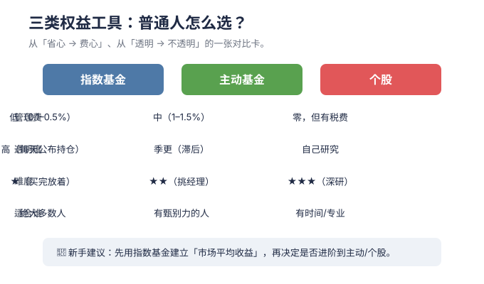

Don't look for the needle in the haystack. Just buy the haystack.
💡 本章为什么重要：本章讲指数基金：不必费尽心思选股，买下整个市场，让时间和复利为你工作。
M03 · 指数基金入门（含一份真实持仓体检）
学习目标：搞懂指数基金为什么是普通人的首选，认识 QDII/ETF/联接，并用一个真实案例学会"怎么判断一个基金适不适合我"。 预计用时：45 分钟。
一、为什么推荐普通人从指数基金开始？
指数基金 = 不挑股票，机械复制某个指数（如沪深300、纳指100）。它的好处：
- 规则透明：买什么、买多少，指数说了算，不靠基金经理"发挥"。
- 费用低：管理费常 0.15%–0.5%/年，远低于主动基金（1.5%）。
- 长期不输：大量研究证明，长期看多数主动基金跑不赢指数。
- 省心：不用天天研究个股，定投就好。
指数基金之父约翰·博格的话："不要在草堆里找针，买下整个草堆。"
二、几种"指数基金"的区别（别搞混）
| 名称 | 在哪买 | 特点 |
|---|---|---|
| 场外指数基金（联接基金） | 基金平台（支付宝/天天） | 用银行卡申购赎回，1 元起，适合定投 |
| ETF | 证券账户 | 像股票一样盘中买卖，费率最低，但需开户 |
| QDII 指数基金 | 基金平台 | 投海外市场（如美股），有汇率风险+ 额度限制 |
| 指数增强基金 | 基金平台 | 在复制指数基础上"小抄作业"，可能略赢可能略输 |
联接基金是什么？简单说：它不直接买股票，而是主要买对应的 ETF，让你在基金平台也能"间接持有 ETF"。方便，但多层结构略加费用。

三、看懂一只指数基金的三张表
买之前至少看三项：
- 跟踪什么指数：纳指100？沪深300？这决定它赚哪国、哪类资产的钱。
- 费率：管理费 + 托管费 + 申购/赎回费。长期复利下，费率差 1% 就是真金白银。
- 跟踪误差：基金涨跌幅和指数差多少，越小越好（说明"复制得像"）。
四、📋 真实案例：一份"跟着朋友买"的持仓体检
以下为教学脱敏案例。数据来自公开资料，仅作方法演示，不构成任何买卖建议。
某人（新手）听了朋友"长期持有准没错"，买了两只： - A：某纳斯达克100指数(QDII)人民币A（代码 019172） - B：某中证A500ETF联接A（代码 022436）
体检结果
| 项目 | A（纳指100 QDII） | B（中证A500 联接） |
|---|---|---|
| 跟踪指数 | 美股科技龙头 | A股大中盘核心宽基 |
| 近1年收益* | ≈ +15.8% | ≈ +X%（随市场） |
| 估值分位 | PE-TTM ≈ 34 倍，处历史 ~77% 高位 | PE ≈ 15–16 倍，分位中等偏低 |
| 风险点 | 估值偏高 + 美元汇率波动 | 指数 2024 才发布，历史短 |
| 费用 | 管理费 0.5%+ 托管 0.15%（QDII 偏贵） | 管理费 0.15%+ 托管 0.05% |
* 收益为案例时点数据，会变化，请勿当作现状。
诊断出的 3 个问题
- 两只都是权益，没有"稳定器"：组合缺债券/现金，短期波动会很大。
- 估值冷热不均：A 在相对高位，B 在相对低位，说明"无脑跟买"没看估值。
- 没有卖出计划：只听"长期持有"，但"跌多少止损/啥时再平衡"完全没想。
给新手的修正方案
- 先确认 3–6 个月应急金已备好（且不在基金里）
- 加入债券/银行理财，把整体权益占比压到能承受的范围（见 M05）
- 设定再平衡：每年检查目标占比，偏离就机械调仓
- 后续加仓用定投，每笔买入前写"为什么买、什么情况卖"
仓库
tools/fund_compare.py可把两只基金的费率、收益做成对比表。
五、新手买指数基金的 4 条纪律
- 宽基优先：沪深300、中证A500、纳指100 这类"买整个市场"，比押单一行业稳。
- 低估多买、高估少买：用估值百分位（M06）辅助，不追热点。
- 定投代替择时：没人能稳定猜低点，分批买摊平成本。
- 拿长钱：指数基金是 3 年以上的游戏，短线会被费用 + 波动吃掉。
六、本周行动清单 ✅
- [ ] 把你持有的每只基金，填进上面的"三张表"
- [ ] 算一下你的整体"权益占比"是否过高
- [ ] 用
tools/fund_compare.py对比两只基金的费率
七、下一步
→ M04 主动基金与股票入门：指数之外，主动基金和个股是什么，普通人该碰吗。
🌐 English Abstract
Topic: Index funds — the default starting point for ordinary investors (with a real portfolio check-up).
Key takeaways: - Index funds mechanically replicate an index: transparent, cheap (0.15%–0.5%/yr), and historically hard to beat long-term. - Know the types: onshore index fund / ETF (trade like a stock) / QDII (overseas, with FX risk) / enhanced index. - Three tables to read before buying: tracked index, fees, tracking error. - A real desensitized case shows two all-equity holdings with no stabilizer and no sell plan — the classic "bought on a friend's tip" mistake.
Why it matters: Index funds are the rational default; everything else (active, stock-picking) is an "advanced elective" built on top of them.